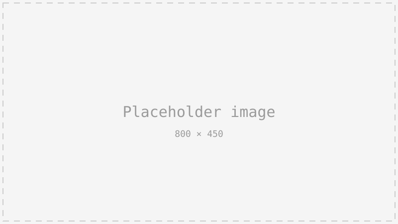

in uni i liked to explore different feilds and hence my projects go from Userinterface, visual to industrial design.

I design drones for lightshows and the defence forces.
Lightshows are a major part of our company and flying thousands of drones at once gives me a very unique problem statement to solve, which is to design a drone both for reliability and to adhere to logistical constraints.
one of the things our team did was to design and manufacture India's first sub 250 grams injection moulded drone.
with a smaller drone and an even smller surface area we had to get creative with the way we distribute light to the audience and hence the shape and function of the angled diffuser.
To design these copters we always start with the power system. we needed a way to test the motors and propellers beyond manufacturers datasheet and that led me to create this.
At the start of every copter's journey this helps us to choose the right Motor, Prop, ESC & Battery combination.
In the market dominated by white labelled foreign products I am proud to be in the team which designed the first sub 250 gram drone to be produced in India.
click here to view my other projects of mine.